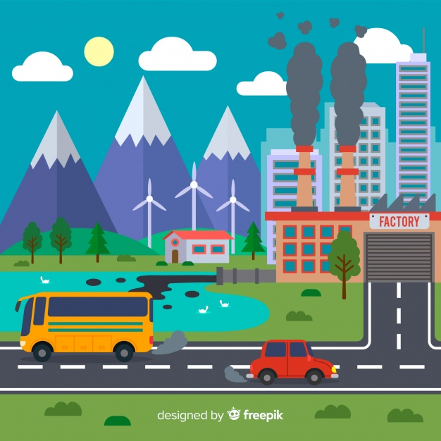
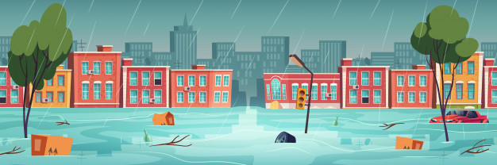

• ຜົນກະທົບຂອງການປ່ຽນແປງສະພາບພູມອາກາດ.
ການປ່ຽນແປງສະພາບພູມອາກາດໄດ້ສົ່ງຜົນໃຫ້ລະດູການຕ່າງໆ ຂອງໂລກມີການປ່ຽນແປງໄປ ໂດຍການທີ່ມີລະດູຮ້ອນທີ່ຍາວນານຂຶ້ນ, ມີລະດູໜາວທີ່ສັ້ນລົງ, ເກີດພາວະແຫ້ງແລ້ງທີ່ມີຄວາມຮູນແຮງຂຶ້ນໃນລະດູແລ້ງ, ເກີດມີຝົນຕົກໜັກຂຶ້ນ ເຮັດໃຫ້ມີປະລິມານນ້ຳຝົນຫຼາຍກວ່າປົກກະຕິໃນລະດູຝົນ. ນອກຈາກນັ້ນ, ການທີ່ອຸນຫະພູມໂລກສູງຂຶ້ນຍັງເຮັດໃຫ້ນ້ຳກ້ອນທີ່ຢູ່ຂົ້ວໂລກ ແລະຢູ່ເທິງຍອດພູສູງລະລາຍ ສົ່ງຜົນໃຫ້ມີປະລິມານ້ຳທະເລຫຼາຍຂຶ້ນ ເຊຶ່ງການປ່ຽນແປງທາງພູມອາກາດເຫຼົ່ານີ້ໄດ້ສົ່ງຜົນກະທົບຕໍ່ມະນຸດໃນຫຼາຍດ້ານ ທັງທາງດ້ານສຸຂະພາບ, ຄວາມຫຼາກຫຼາຍທາງຊີວະພາບ ແລະ ລະບົບນິເວດ, ຜົນກະທົບຕໍ່ຊັບພະຍາກອນນ້ຳ ແລະ ຜົນກະທົບຕໍ່ເຂດພື້ນທີ່ແຄມທະເລ ເຊິ່ງສາມາດສະຫຼຸບໄດ້ດັ່ງນີ້:
1. ຜົນກະທົບຕໍ່ສຸຂະພາບມະນຸດ.
ການປ່ຽນແປງຂອງສະພາບພູມອາກາດອາດຈະມີຜົນກະທົບຕໍ່ສຸຂະພາບຂອງມະນຸດຢ່າງກ້ວາງຂວາງ ໝາຍເຖິງຄວາມຮຸນແຮງຂອງພາຍຸ, ການເກີດອຸທົກກະໄພ, ໄພແຫ້ງແລ້ງ ແລະ ຄວາມແຮງຂອງຄື້ນຄວາມຮ້ອນທີ່ສູງຂຶ້ນ ເຊິ່ງອາດຈະເປັນສາເຫດທີ່ເຮັດໃຫ້ເກີດການສູນເສຍຊີວິດເພິ່ມຂຶ້ນ ໂດຍສະເພາະປະຊາກອນກຸ່ມສ່ຽງທີ່ມີຄວາມອ່ອນໄຫວຕໍ່ສະພາບອາກາດ ເຊັ່ນ: ເດັກນ້ອຍ, ຜູ້ສູງອາຍຸ(ຜູ້ເຖົ້າ) ແລະ ຜູ້ປ່ວຍທີ່ເປັນພະຍາດຕ່າງໆ. ນອກຈາກນີ້, ການທີ່ໂລກຮ້ອນຂຶ້ນຍັງເຮັດໃຫ້ເຊື້ອພະຍາດຕ່າງໆ ແຜ່ກະຈາຍໄດ້ຢ່າງກ້ວາງຂຶ້ນ ເຊັ່ນ: ພະຍາດໄຂ້ມາເລເລຍ ປະກອບກັບປະລິມານນ້ຳຈືດຫຼຸດລົງ ເຮັດໃຫ້ະນຸດມີນ້ຳເພື່ອອູປະໂພກ, ບໍລິໂພກ ຫຼຸດໜ້ອຍຖອຍລົງຈົນອາດຈະຕ້ອງໃຊ້ນ້ຳທີ່ບໍ່ສະອາດເຊັ່ນ: ນ້ຳໃນແມ່ນ້ຳ ເຊິ່ງປັດໃຈເຫຼົ່ານີ້ສາມາດເຮັດໃຫ້ເກີດບັນຫາການລະບາດຂອງພະຍາດທີ່ກ່ຽວຂ້ອງກັບທາງເດີນອາຫານໄດ້ຫຼາຍຂຶ້ນ.
2. ຜົນກະທົບຕໍ່ຄວາມຫຼາກຫຼາຍທາງຊີວະພາບ ແລະ ລະບົບນິເວດ.
 ການປ່ຽນແປງຂອງສະພາບພູມອາກາດຂອງໂລກມີອຸນຫະພູມເພີ່ມຂຶ້ນປະມານ 1,8-4,0ອົງສາ, ໃນອີກ 100 ປີທາງໜ້າ
ຈະເຮັດໃຫ້ເຂດພູມອາກາດຂອງໂລກໃນປັດຈຸບັນປ່ຽນແປງໄປ ໂດຍສະເພາະພື້ນທີ່ໃນເຂດອົບອຸນ ເຊິ່ງຈະສົ່ງຜົນໃຫ້ພືດ ແລະ ສັດທີ່ບໍ່ສາມາດປັບຕົວໃຫ້ທັນຕໍ່ການປ່ຽນແປງທີຈະເກີດຂຶ້ນ
ກໍຈະເຮັດໃຫ້ສັດເຫຼົ່ານັ້ນສູນພັນໄປໃນທີ່ສຸດ.
ຈາກພາບຈຳລອງຂອງການປ່ຽນແປງສະພາບພູມອາກາດ ຈາກແບບຈຳລອງໜຶ່ງໄດ້ຊີ້ໃຫ້ເຫັນວ່າອຸນຫະພູມທີ່ເພີ່ມຂຶ້ນອາດມີຜົນກະທົບທີ່ສຳຄັນຕໍ່ອົງປະກອບຂອງພັນໄມ້ໃນປ່າ
ເຖິງ 1/3 ຂອງໂລກໂດຍປ່າບາງຊະນິດອາດຈະສູນພັນໄປ ໃນຂະນະທີ່ປ່າພັນໃໝ່ອາດຈະເກີດຂຶ້ນ ແລະ ເຮັດໃຫ້ເກີດມີລະບົບນິເວດໃໝ່ໄດ້. ນອກຈາກນັ້ນ, ການທີ່ອຸນຫະພູມອົບອຸນຂຶ້ນຈະສົ່ງຜົນເຮັດໃຫ້ສັດຕູພືດມີການແຜ່ພັນ ແລະ
ແຜ່ລະບາດຫຼາຍຂຶ້ນ ລວມທັງເຮັດໃຫ້ມີການເກີດໄຟປ່າ, ອັດຕາການຕາຍຂອງສັດປ່າເພີ່ມສູງຂຶ້ນ ແລະ ຍັງເຮັດໃຫ້ພື້ນທີອຸ້ມນ້ຳຫຼຸດໜ້ອຍລົງ.
3. ຜົນກະທົບຕໍ່ພື້ນທີ່ແຄມຝັ່ງທະເລ.
ເນື່ອງຈາກວ່າລະດັບນ້ຳທະເລສະເລ່ຍຂອງໂລກໃນຊ່ວງ 100 ປີທີ່ຜ່ານມາໄດເພີ່ມສູງຂຶ້ນປະມານ 10-25 ຊັງຕີແມັດ ສົ່ງຜົນໃຫ້ບໍລິເວນພື້ນທີ່ແຄມຝັ່ງ ຖືກນ້ຳຖ້ວມ ແລະ
ຖືກນ້ຳເຊາະເຈື່ອນຫຼາຍຂຶ້ນ, ເຊິ່ງມີການຄາດການວ່າ ການເພິ່ມຂຶ້ນຂອງອຸນຫະພູມໂລກອາດຈະເຮັດໃຫ້ລະດັບນ້ຳທະເລສູງຂຶ້ນປະມານ 50 ຊັງຕີແມັດ, ຖ້າຫາກການຄາດເດົານີ້ເປັນຈິງ ຈະເຮັດໃຫ້ເຂດພື້ນທີ່ເເຄມຝັ່ງທະເລຂອງປະເທດຕ່າງໆ
ຫາຍໄປ.
ການປ່ຽນແປງສະພາບພູມອາກາດ ນອກຈາກຈະເຮັດໃຫ້ລະດັບນ້ຳທະເລເພີ່ມສູງຂຶ້ນແລ້ວ ຍັງອາດຈະເຮັດໃຫ້ພື້ນທີ່ນ້ຳກ້ອນລົດລົງຈົນເກີດການລວມຕົວແນວດິ່ງຂອງນ້ຳກ້ອນ
ແລະ ຄື້ນ ເຮັດໃຫ້ເກີດການປ່ຽນແປງລະບົບການໝູນວຽນຂອງນ້ຳທະເລ ເຊິ່ງການປ່ຽນແປງເຫຼົ່ານີ້ຈະສົ່ງຜົນກະທົບຕໍ່ຊັບພະຍາກອນຊີວະພາບ ທາດອານຫານ ແລະ ໂຄງສ້າງຂອງລະບົບນິເວດ.
4. ຜົນກະທົບຕໍ່ຊັບພະຍາກອນນ້ໍາ.
ການປ່ຽນແປງສະພາບພູມອາກາດເຮັດໃຫ້ອຸນຫະພູມຂອງໂລກສູງຂຶ້ນ ສົ່ງຜົນໃຫ້ປະລິມານນ້ຳຝົນ ແລະ ຄວາມທີ່ຂອງຝົນ ເກີດການປ່ຽນແປງ ຈາກການໃຊ້ແແບບຈຳລອງການປ່ຽນແປງຂອງສະພາບພູມອາກາດ ວິເຄາະພາບຈຳລອງກໍລະນີມີກາສ CO2 ເພີ່ມຂຶ້ນຈາກລະດັບປີ ຄ.ສ 1900 ເປັນສອງເທົ່າ ພົບວ່າປະລິມານນ້ຳຝົນຂອງໂລກຈະເພີ່ມຂຶ້ນປະມານ 5/100, ແຕ່ປະລິມານນ້ຳຝົນຈະແຕກຕ່າງກັນຕາມພູມສັນຖານ ໜາຍເຖິງ ປະລິມານນ້ຳຝົນຈະຫຼາຍຂຶ້ນໃນບາງພື້ນທີ່ ແລະ ຈະຫຼຸດລົງໃນບາງພື້ນທີ່ ໂດຍພູມສັນຖານທີ່ຢູ່ໃກ້ຂວ້າໂລກເໜືອອາດຈະມີນ້ຳຖ້ວມຫຼາຍຂຶ້ນ ໃນຂະນະທີ່ພື້ນທີ່ອື່ນ ປະລິມານນ້ຳຝົນຈະຫຼຸດລົງ ເຊິ່ງພື້ນທີ່ທີ່ມີປະລິມານຝົນຕົກຫຼາຍຂຶ້ນຈະເກີດນ້ຳຖ້ວມ ສ່ວນພື້ນທີ່ທີ່ມີປະລິມານນ້ຳຝົນຫຼຸດລົງຈະມີປະລິມານນ້ຳໄຫຼລົງສູ່ອ່າງເກັບນ້ຳໜ້ອຍລົງເຮັດໃຫ້ການຂາດແຄນນ້ຳໃນຊ່ວງລະດູແລ້ງເພີ່ມທະວີຄວາມ ຮຸນແຮງຂຶ້ນ.
ຂໍຂອບໃຈເອກະສານອ້າງອີງ ແລະ ຮູບຈາກ:
- https://greennews.agency- https://www.greenpeace.org
- https://www.seub.or.th
- https://lifestyle.socialgiver.com
- https://www.reanrooclimatechange.com
- https://www.freepik.com
- https://undraw.co
- https://climate-science.com
- https://today.line.me/th/v2/
- https://www.greenpeace.org/thailand/